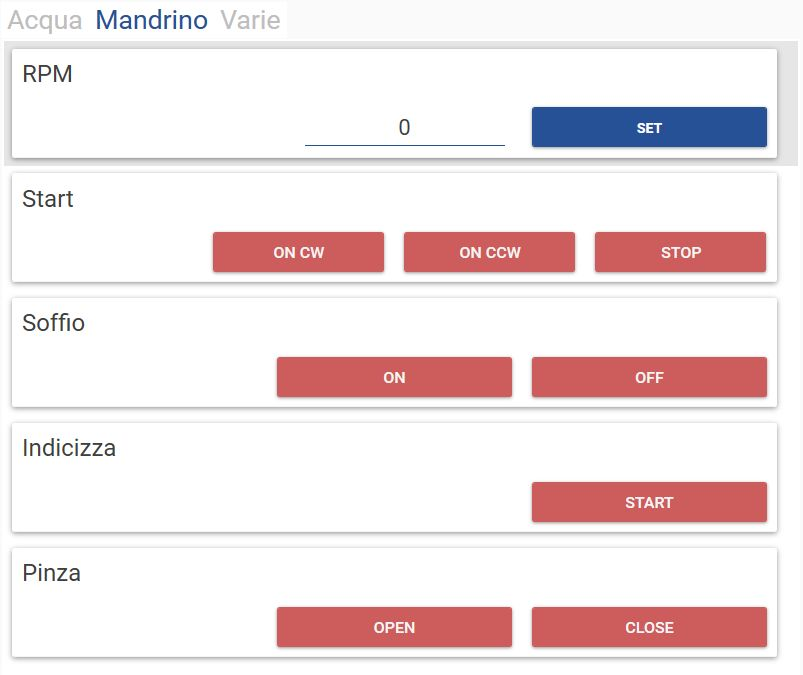
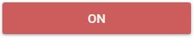
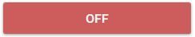
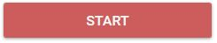
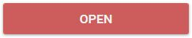

Machine technical documentation Operational document

Speed adjustment
On the “Spindle” tab, various spindle-related commands can be sent.
In the “RPM” section, the spindle speed can be set in RPM.
Spindle commands
The complete list of commands is provided below.
 | Clockwise start |
 | Anticlockwise start |
 | STOP |
 | ON |
 | OFF |
 | Start |
 | Open |
 | Close |